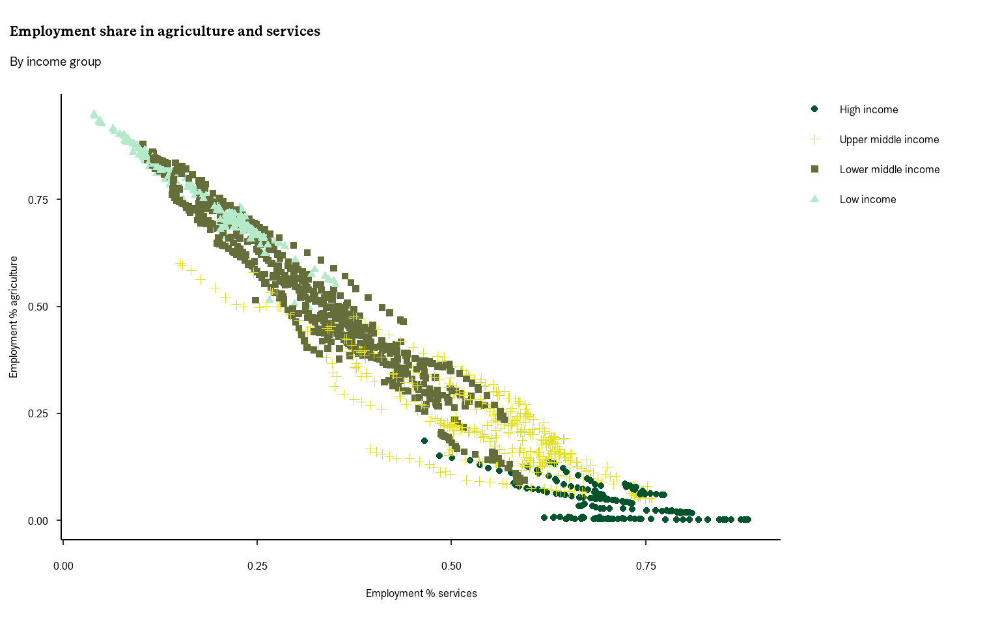
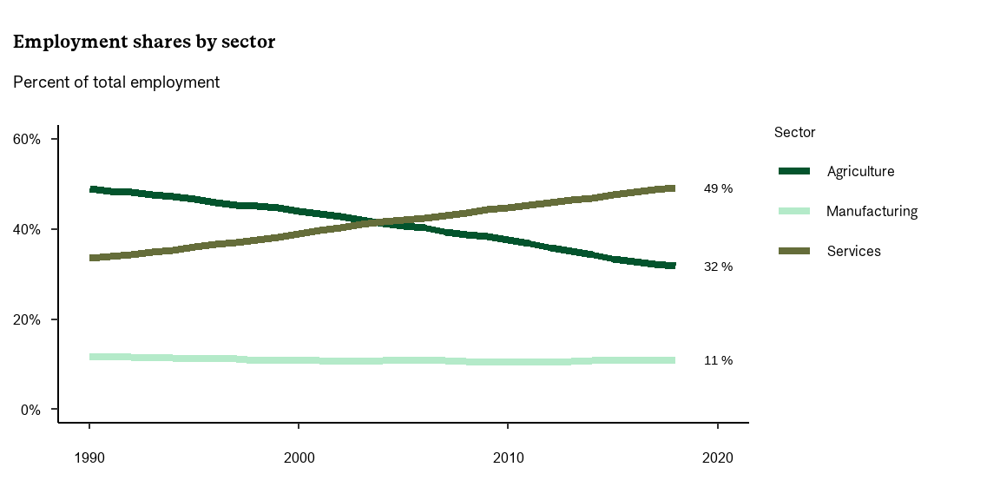
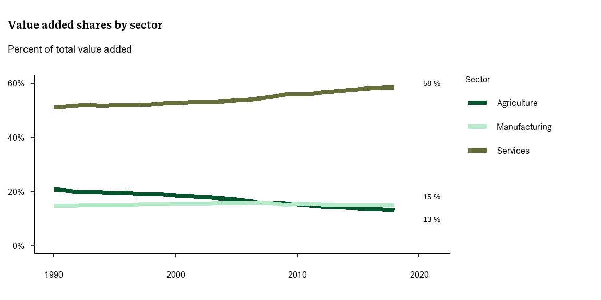
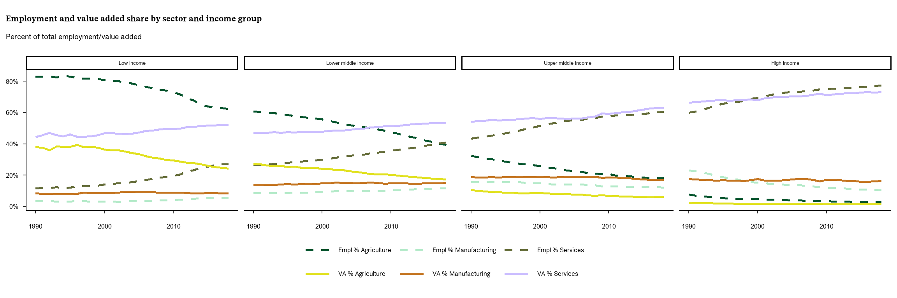
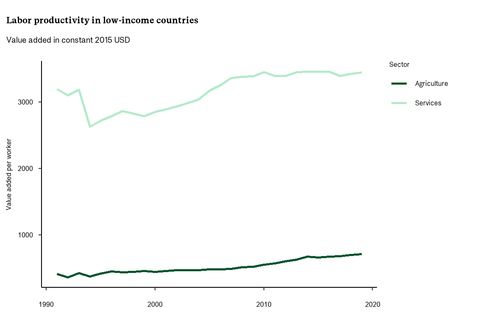
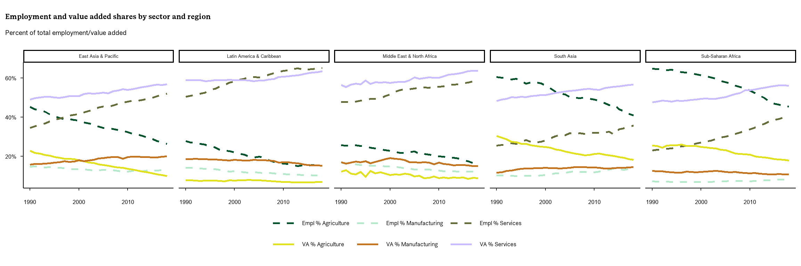

Structural change and development: an overview
forskning
utvikling
vekst
This blog post delves into the significance of structural change, offering insights into the prominent trends observed across different global regions and income categories. Additionally, it explores the potential prospects for developing economies, shedding light on the key obstacles and possibilities that may arise throughout this economic transformative process.
Carola Casti is an economist (PhD) and Senior Adviser in the Section for Statistics and Analysis.
What is structural change?
Labour productivity plays a crucial role in economic growth and development. In its broad economy meaning, it can be decomposed into two major channels (Margaret McMillan, Rodrik, and Verduzco-Gallo 2014): i) the productivity within sectors (within component); and ii) the productivity effect of labour reallocations across different sectors, called structural change.1
The latter represents one of the core elements for sustained long-term growth, as it drives the complexity and the degree of diversification of an economy (Margaret McMillan, Rodrik, and Verduzco-Gallo 2014). This process, which is, by its very nature, dynamic (Diao, McMillan, and Rodrik 2019), can be explained as the transition from low productivity and very labour-intensive sectors/economic activities (e.g. agriculture) to more productive and high-skill intensive ones, implying, then, a change in the sectoral composition of the GDP. As economies develop, the share of employment in agriculture tends to decline, while the opposite trend is observed with respect to the service sector (see Figure 1).
The standard economic view of structural transformation has been based on three stylised facts (Sen 2019): 1. Economies experience a declining employment share in agriculture; 2. Economies experience a hump-shaped share of employment in industry (with a focus on the manufacturing sector which represents its main component) at early stage of development, whereas the share decreases as the economy develops; 3. Economies experience an increasing employment share in services.
Looking at the compositional changes of an economy over time and across countries can be relevant from a policy standpoint. It provides valuable insights into how the future growth potential of the economies may unfold. This aspect becomes even more relevant when focusing on today’s low-income economies, as their growth trajectory can differ significantly from the one of other countries that undertook a miraculous growth, such as the Asian tiger economies (often referred to as the ‘Asian miracle’).2 This may raise important questions about how and to what extent and low-income economies will be able replicate this pattern in the near future (Nayyar, Hallward-Driemeier, and Davies 2021). In other words, is a service-led development model a concrete possibility for poorer economies?
What are the drivers of structural change?
According to economic theory, changes in productivity within the manufacturing and services sectors (which are frequently referred to as ‘modern sector’) are considered the main engine to ensure this transition and to secure a more diversified economy (U.N. Habitat 2016). For the modern sector to grow and prosper, though, a fostering institutional environment (e.g. competition policies) and the availability of human capital are essential elements. The more traditional path of structural change lies in the reallocation of workers from agriculture to manufacturing and service first, and then out of manufacturing and into services. This has been considered the paradigmatic model, as it had been observed in all developed economies. More recently, though, many have started questioning whether this conventional view holds for structurally underdeveloped countries. In many African low-income countries, for instance, we have witnessed a direct transition of the workforce from the agriculture to non-business services (Sen 2019). What are alternative explanations that can explain diverse paths of structural change?
Some structural change pathways may also be, at times, hard to reconcile with social and environmental protection (i.e. the heavy industrialization wave witnessed in China), necessary condition for the transformative change advocated by the 2030 agenda (Islam and Iversen 2018). This raises important questions, as the paradigmatic model of structural change has often been the result, de facto, of an unsustainable development pathway embraced by high and upper-middle income economies for a long time.
Trends in structural change
For the scope of this post, we limit our analysis to a sample of 51 economies, based on the latest available data of The Economic Transformation Database from UNU-WIDER and GGDC (Vries et al. 2021).3
Figure 2 shows the aggregate trends over time of both sectoral employment and valued added share (VA) for the sample of 51 economies included in the ETD.4 We observe an overall decrease by 17 percentage points (35 percent reduction) in the employment share and by 8 percentage points in the VA share within the agriculture sector which, though, still employs on average one third of the total labour force (given the huge incidence in the sample of low and lower-middle income economies). Looking at the manufacturing sector, it has experienced a relatively steady trend over the last thirty years, with respect to both employment and VA shares.5


Last, the service sector has experienced a steady upward trend both in the employment share and in the VA within the service sector, with an increase by 15 percentage points (44 percentage growth) and 7 percentage points (14%) respectively, over the last three decades. When we do the same exercise and differentiate by income groups, some interesting trends emerge (see Figure 3).6
- As countries become richer, both employment and VA share in the agriculture sector tend to substantially decrease. In 2018 they amounted, respectively, to 62 percent and 24 percent in low-income countries, while they were almost null (3 percent and 1 percent respectively) in the high-income countries in our sample.
- Lower-middle income and low-income countries have witnessed a gradual increase in the employment share in the service sector (but still limited compared to the higher income groups), with a slight increase in the sectoral VA share as well.
- In lower-middle income countries the employment share in service has caught up with the one in the agriculture sector, while in low-income countries this gap is still sizable.

- As for the manufacturing sector, the trend, in both employment and VA share, has been relatively stable over time, but, once again, some interesting differences emerge:
- High income economies and upper middle-income economies tend to report systematically a higher VA share in manufacturing as compared to agriculture (but still lower than the service sector), in contrast with the lower-middle- and low-income countries.
- While the high-income group tends to employ a relatively higher share of workers in the manufacturing sector, the opposite holds true for the upper-middle group, where the employment share in agriculture still outnumbers the share in manufacturing.
Not surprisingly, in poorer economies, the share of workers in agriculture tends to exceed, by far, the share of agriculture in GDP. This may suggest the presence of an unproductive agricultural sector, relatively to other sectors, i.e. services (see Figure 4).

An alternative and straightforward categorization for economies based on their structural change process is the following (Sen 2019):
- Structurally developed: EMPL (Employment) share in service is bigger than the EMPL share in manufacturing which is bigger than the EMPL share in agriculture
- Structurally developing: EMPL share in service is bigger than the EMPL share in agriculture which is bigger than the EMPL share in manufacturing
- Structurally underdeveloped: EMPL share in agriculture is bigger than the EMPL share in non agriculture.
Trends across world regions are reported in Figure 5, with SSA and South Asia standing out for their sizable employment’s share in agriculture (despite an overall downward trend almost perfectly offset by service sector):

So, what? Challenges and opportunities
In recent discussions among economists and researchers, a central question has emerged: Is the manufacturing sector an inevitable progression in the development trajectory of low-income economies, or could these nations potentially achieve higher productivity growth by prioritizing the service sector instead? This question gains significant relevance, particularly in the context of economic development.
The reason why manufacturing had been considered essential for growth for so long, was its ability to combine scale, innovation, and spillovers with low-skilled employment, thereby increasing productivity and large-scale job creation (a twin gain). However, the ‘modern’ manufacturing sector has become more skill-intensive and it seems to rely more heavily on technological innovation that favors capital over labour (Rodrik 2018). This means that the comparative advantage of poorer economies to use relatively cheaper labour is likely to have eroded over time (M. McMillan and Zeufack 2022) and the win-win scenario (productivity and job creation at scale) is not a given anymore.
A second important point is linked to trade integration, global competition, and the tendency for production to be part of cross-border value chains. This puts higher demands on regulated trade with inputs and intermediary products and makes it (even) more difficult for countries with an underdeveloped business environment – including cumbersome border controls (and corruption) - to move closer to the technology ladder and compete successfully.
As for the service sector, it represents a quite heterogenous group. There are, indeed, many important differences among services, with respect to their scale, innovation, spillovers, and skill-intensity. This may have implications on both productivity and employment. While some of these services are also intertwined with the manufacturing sector and goods (there is, broadly speaking, a degree of complementarity), others can be largely driven from non-manufacturing sectors and do not require a manufacturing core to prosper. This is crucial, as increased productivity in the service sector can generate positive spillover effects across the entire economy. According to a World Bank report (Nayyar, Hallward-Driemeier, and Davies 2021) on the potential of service-led transformation, much of the growth experienced by the service sector in poor economies has been driven by low-skilled services (tradable and domestic), rather than by the global innovators services such as finance and business (despite a promising upward trend), or skill-intensive social services (education and health).
Demographic dividend
Now, when we link this to the broader perspective of economic growth, it becomes even more pertinent. The demographic structures of many poor economies play a critical role in shaping future economic growth. Consider, for instance, the case of Africa, which stands out as the youngest continent globally. The substantial growth in its working-age population represents a unique window of opportunity. If harnessed effectively, this demographic advantage can translate into higher economic growth and yield what is known as a “demographic dividend”. To accommodate this process, a more diversified economy and dynamic labour market are necessary.7 There is evidence, though, of a catch-up effect enabled by low-skill services in lower-income countries (Kinfemichael and Morshed 2019). Besides, the more widespread uptake of digital technologies and the higher tradability of some of these services suggest that the potential to unfold within this broad sector is still significantly high.
Speeding it up
The most productive services tend to offer both higher wages and better-quality jobs. What could be done to speed up the process and enable workers to be reallocated to those services?
- Given the financial constraints that governments face, designing policies that target the most promising service subsectors can make a difference, especially when they have the potential to generate higher spillover effects and benefit the entire economy. Findings from the World Bank (2021) point at global innovators and low-skill tradable services as the most relevant ones for the economy-wide production (as inputs in the value chains), by outperforming the manufacturing subsectors.
- Human capital also plays a key role in this, in the form of skill building, via formal education and/or in the form of training, which also translates into a better technological uptake. Investing in digital technologies and intangible capital represent another key element to strengthen the service sector, as they can be applied to different types of services (including the ones that employ low-skill workers) and may enhance both scale and scope (even more when they are closely linked to other sectors).
- Some services are also more suitable to be traded in international markets, opening up to a new source of comparative advantage and ensuring a larger scale, in the form, for ex. of offshore business services (i.e. IT, accounting, customer support services). This, though, requires a conducive regulatory environment, in the form of lower barriers (there are varying degrees of restrictions across the different sectors), better competition, and less regulatory burden faced by the private sector.
In some specific contexts, though, this process and these changes may be harder to accomplish due to some worrying political and institutional environments. The presence of extractive political institutions (rent seeking) may, indeed, disincentivise investors who may lack trust and fear to be expropriated by the government, thereby translating into low private capital mobilization, thereby jeopardizing the existence of a dynamic and competitive environment in these countries. Similarly, the presence of political instability in some of these economies is likely to hinder and disrupt markets’ actors and growth, further complicating their economic structural transformation.
Identifying the potential
The past years, including the pandemic, have taught countries around the world the importance of having a dynamic, responsive, adaptable, and diversified economy to recover quickly from unexpected, potentially disruptive shocks. Identifying the potential that some of these sectors may offer represents a great opportunity for both growth and risk mitigation.
References
Dewan, S., E. Ernst, and S. Achkar Hilal. 2022. World Employment and Social Outlook: Trends 2022. International Labour Organization.
Diao, Xinshen, Margaret McMillan, and Dani Rodrik. 2019. “The Recent Growth Boom in Developing Economies: A Structural-Change Perspective.” In The Palgrave Handbook of Development Economics, edited by Machiko Nissanke and José Antonio Ocampo, 281–334. Palgrave Macmillan.
Islam, S. Nazrul, and Kenneth Iversen. 2018. “From "Structural Change" to "Transformative Change": Rationale and Implications.” Working Paper.
Kinfemichael, Bisrat, and A. K. M. Mahbub Morshed. 2019. “Unconditional Convergence of Labor Productivity in the Service Sector.” Journal of Macroeconomics 59: 217–29.
McMillan, Margaret, Dani Rodrik, and Íñigo Verduzco-Gallo. 2014. “Globalization, Structural Change, and Productivity Growth, with an Update on Africa.” World Development 63: 11–32.
McMillan, M., and A. Zeufack. 2022. “Labor Productivity Growth and Industrialization in Africa.” Journal of Economic Perspectives 36 (1): 3–32.
Nayyar, G., M. Hallward-Driemeier, and E. Davies. 2021. At Your Service?: The Promise of Services-Led Development. Washington, DC: World Bank Group.
Rodrik, Dani. 2018. “New Technologies, Global Value Chains, and Developing Economies.” Working Paper w25164. National Bureau of Economic Research.
Sen, Kunal. 2019. “Structural Transformation Around the World: Patterns and Drivers.” Asian Development Review 36 (2): 1–31.
U.N. Habitat. 2016. Structural Transformation in Developing Countries: Cross Regional Analysis. Nairobi: United Nations Human Settlements Programme.
Vries, Gaaitzen de, Linda Arfelt, Dorothea Drees, Mareike Godemann, Calumn Hamilton, Bente Jessen-Thiesen, Ahmet Ihsan Kaya, Hagen Kruse, Emmanuel Mensah, and Pieter Woltje. 2021. “The Economic Transformation Database (ETD): Content, Sources, and Methods.” WIDER Technical Note 2/2021.
Footnotes
Often also referred to as ‘structural transformation’.↩︎
Taiwan (China), Hong Kong (China), South Korea, Singapore and China.↩︎
The ETD “has better coverage of low-income developing countries, distinguishes 12 sectors in the International Standard Industrial Classification, Revision 4 (ISIC rev. 4) classification, and has time series that run until 2018.” From a project supported by UNU-WIDER and run by the GGDC (Groningen Growth and Development Centre). Insert link The dataset includes data for 51 (mostly developing and poor) economies: 21 in Africa, 9 in Latin America, and 21 in Asia; 12 sectors of the total economy following the ISIC rev. 4 industry classification; time series with annual data from 1990 to 2018 (last release in 2021).↩︎
With value added we refer to the net output of a sector (netting out intermediate inputs)↩︎
Several economies had already reached their peak in their manufacturing employment share before the 1960 (Sen 2019).↩︎
Based on the World Bank categorization: High income (Chile, Taiwan (China), Hong Kong (China), Israel, Japan, Rep. Korea, Singapore); Upper-middle income (Argentina, Botswana, Brazil, China, Colombia, Costa Rica, Ecuador, Malaysia, Mauritius, Mexico, Namibia, Peru, South Africa, Thailand, Turkey); lower-middle income (Bangladesh, Bolivia, Cambodia, Cameroon, Egypt, Ghana, India, Indonesia, Kenya, Laos, Lesotho, Morocco, Myanmar, Nepal, Nigeria, Pakistan, Philippines, Senegal, Sri Lanka, Tanzania, Tunisia, Vietnam); low-income (Burkina Faso, Ethiopia, Malawi, Mozambique, Rwanda, Uganda, Zambia).↩︎
While diversification is crucial to enable the conditions for decent work, it is also important to keep in mind that a high proportion of workers, in poor worldwide regions, are currently employed in the agricultural sector. It remains, therefore, crucial to improve productivity and working conditions in this sector as well (Dewan, Ernst, and Achkar Hilal 2022).↩︎